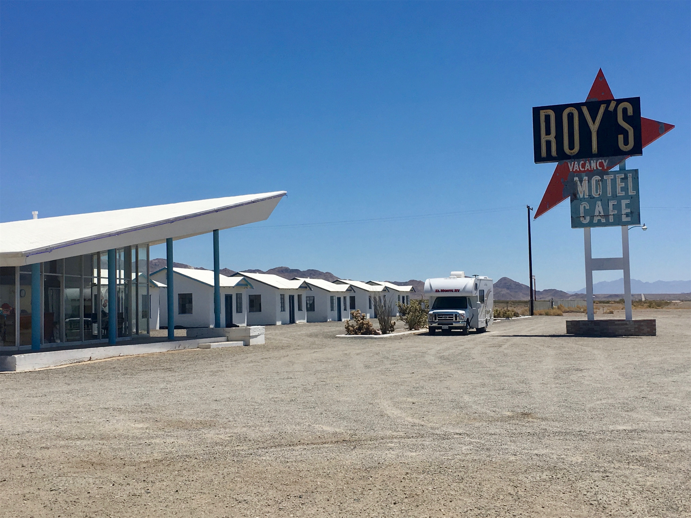
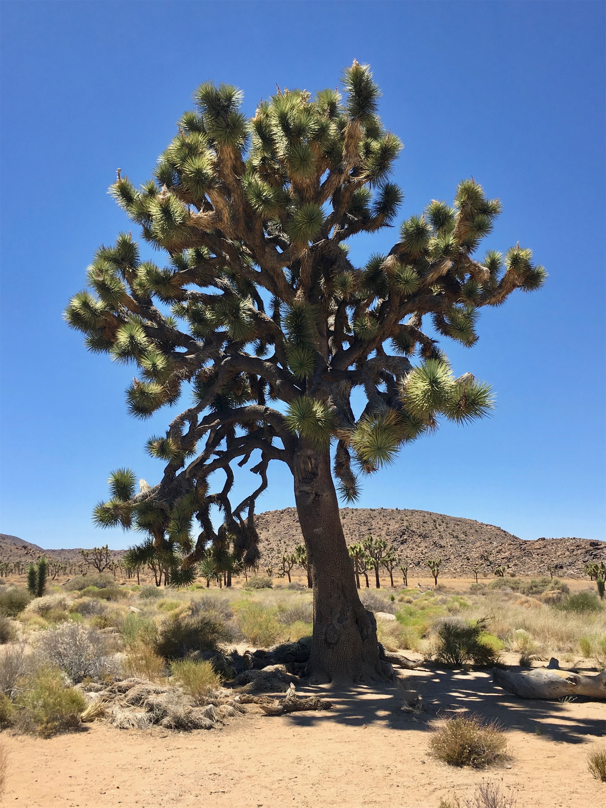
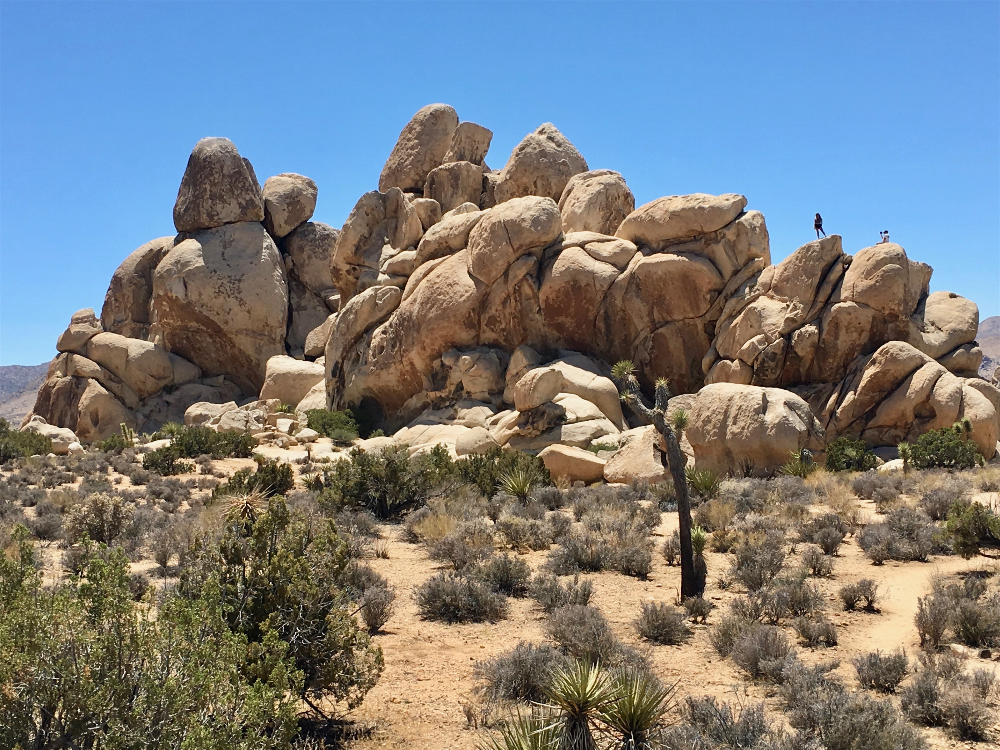
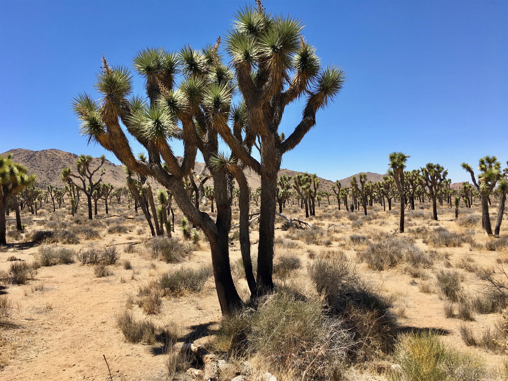
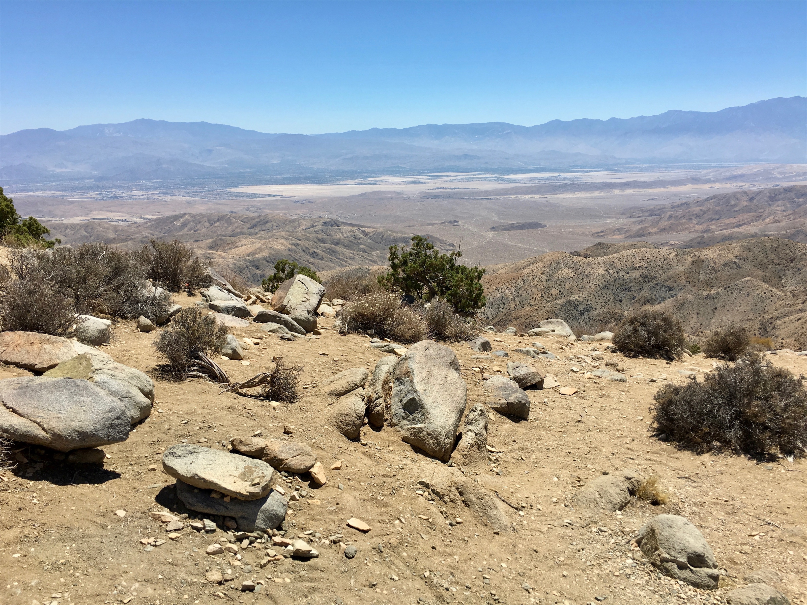
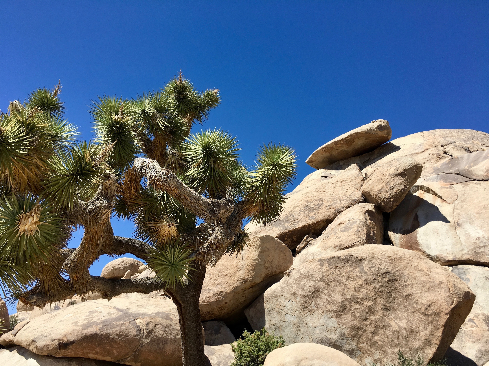

Monday, Jun 18, 2018, 1:13 PM PDT
74485 National Park Dr, Twentynine Palms, CA, United States
84°F Sunny
84°F Sunny
![]()
6/18 The Ranch at Death Valley, CA -> Oasis Visitor Center, CA 241 mi, 5.25 hr
6/18 Oasis Visitor Center, CA -> Keys View -> Joshua Tree Visitor Center, CA 45 mi, 2hr
Trip Total: 3,811 mi
Leaving Death Valley, through more desert, mountains, and the deserted Mojave National Preserve, we passed through the tiny town of Amboy (population 4 now, was 700) on the old Route 66, famous for Roy’s Motel and Cafe, which is considered the prime example of Roadside Mid-Century Modern Googie architecture. Erin will have to explain this one! It is now defunct, except for expensive gas and snacks, but restoration is underway. We then finally reached the town of Twentynine Palms, the north entrance to the park. This park, part of the Mojave Desert, is known for the concentration of (surprise) Joshua Trees, large piles of boulders (see Skull Rock below), and a great view of the Coachella Valley floor where Palm Springs, the Salton Sea, and the San Andreas fault are visible from Keys View (5,185 ft). We exited the park at the west entrance, at the town of Joshua Tree.
We have seen Joshua Trees in scattered spots throughout our trip, starting before Death Valley, but this park by far has the most abundant collection. The Joshua Tree isn’t a tree and it isn’t a cactus. It is a type of Agave. It gets its name from early Mormon settlers who thought it looked like Joshua raising his arms to the heavens. They can get to 50 ft high.






